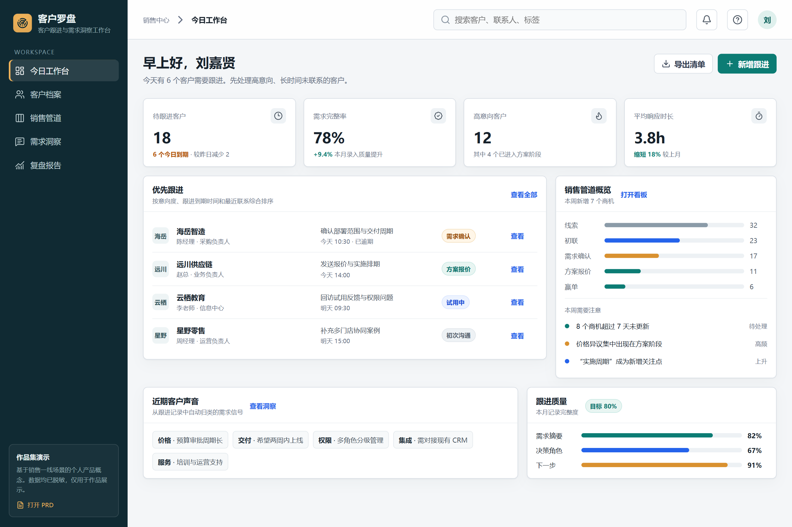
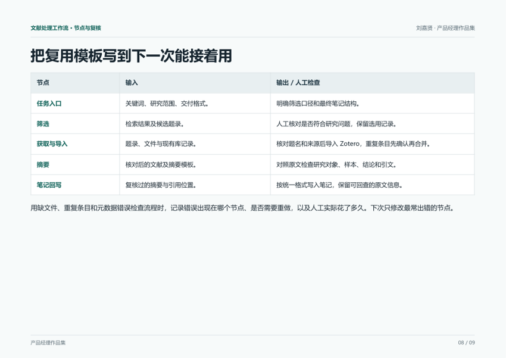
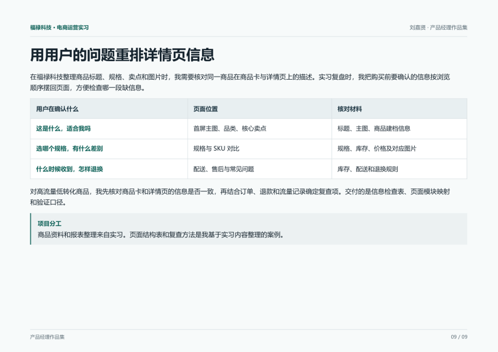

原型界面
个人概念方案
客户罗盘
12 个字段减到 4 个，首页改为「今日必做」，AI 摘要保存前人工确认。
查看案例产品经理作品集
基于客户反馈和商品页面观察，我提炼产品需求，交付可评审原型、PRD 与验证计划。

个人概念方案
12 个字段减到 4 个，首页改为「今日必做」，AI 摘要保存前人工确认。
查看案例
流程与校验已完成的个人项目
把检索、导入和回写拆成可复用节点，并在保存前加入人工校验。
查看案例
模块映射福禄科技实习复盘
按浏览、比较与下单前的问题，重新组织商品信息与详情页模块。
查看案例压缩为四个动作字段，其余信息折叠，降低首次录入负担。
先显示到期任务、停滞提醒和高意向客户，让销售知道今天联系谁。
摘要只引用已有记录，由销售核对后再保存。
销售 · 客户需求整理
记录业务场景、高频异议和跟进动作，将反馈按功能、价格、交付和服务分类。客户罗盘由此提炼需求并独立完成原型。
看对应案例 ↗电商运营实习 · 详情页信息
核对商品建档、SKU 和图片资料，将浏览、比较与下单前的用户问题映射到详情页模块。
看对应案例 ↗东北大学 · 工商管理硕士在读
湖北工业大学 · 电子商务本科
迭代记录
下一轮计划访谈 5 至 8 位销售，做三轮原型测试，再用两周小范围试点观察录入、下一步覆盖和逾期跟进。客户罗盘目前为个人概念方案。 试点先看字段完整率、下一步覆盖率与逾期跟进。成交率还会受到价格、销售执行和交付条件影响。
压缩为四个动作字段，其余信息折叠，降低首次录入负担。
先显示到期任务、停滞提醒和高意向客户，让销售知道今天联系谁。
摘要只引用已有记录，由销售核对后再保存。
个人概念方案
在艾利佳销售岗位，我整理客户需求与异议，并用 Excel 记录阶段和跟进动作。客户罗盘是从这些观察延伸出的个人概念方案。
已完成的个人项目
福禄科技实习复盘
在福禄科技电商运营实习中，我整理商品标题、规格、卖点和详情页资料。下面的模块映射来自对这段实习的复盘。